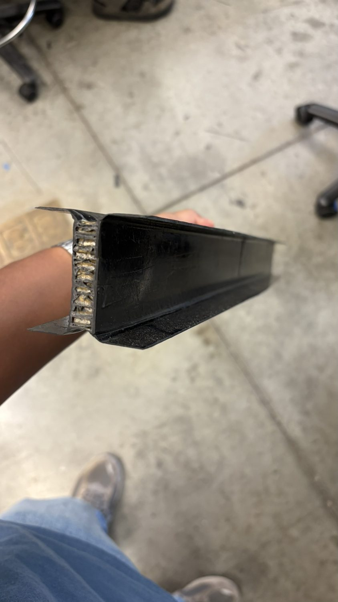
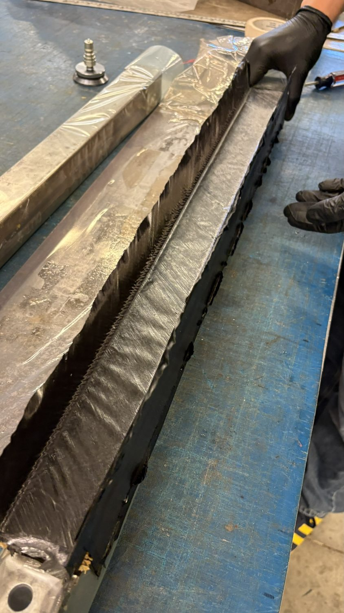
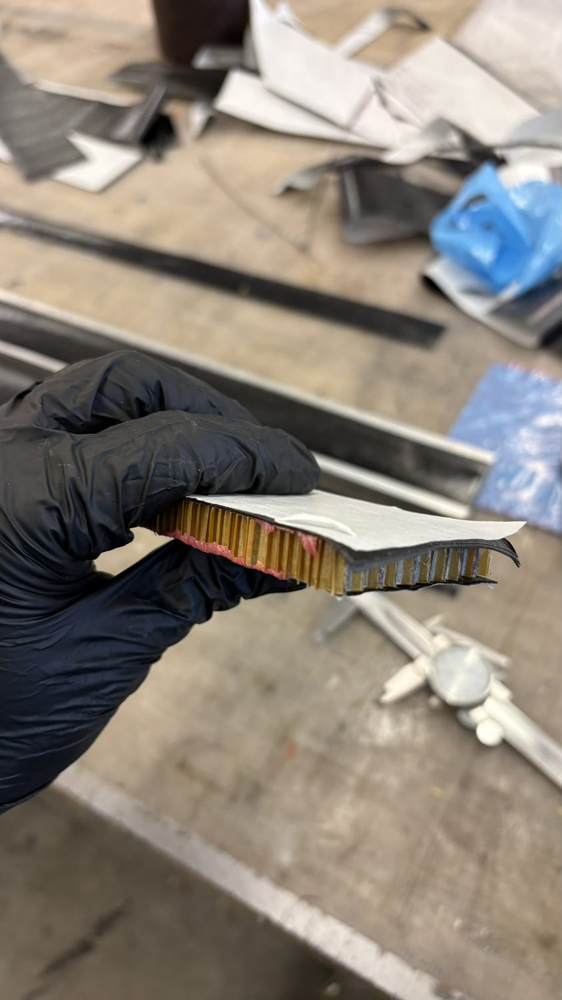
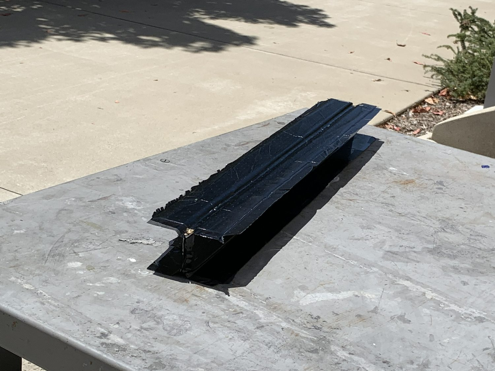
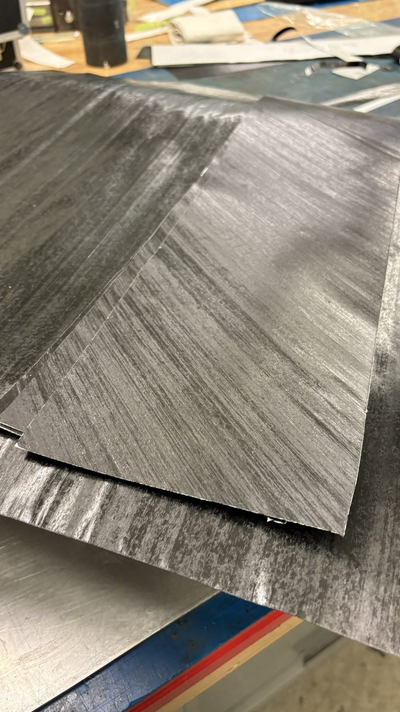
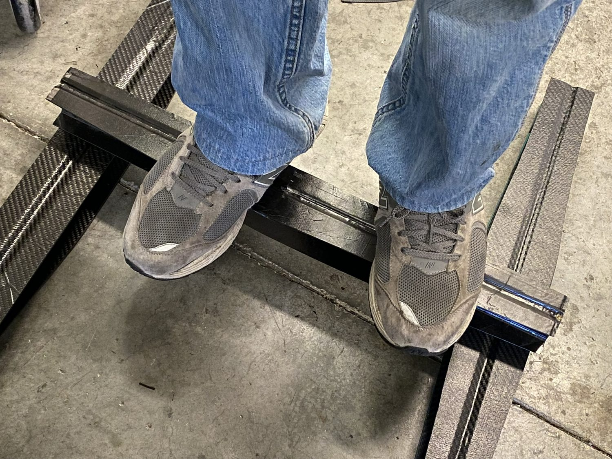

PROJECT 04 / 11 · ME412 / 161 · SAMPE
SAMPE Composite I-Beam
A SAMPE bridge composite I-beam for ME412/161, engineered to be the lightest beam that still carries the maximum point load in three-point bending.
ClassME412 / 161
ChallengeSAMPE bridge
GoalMax load ÷ min mass
FlangesUD pre-preg carbon
CoreNomex sandwich web
Result9 kN at 312 g
Overview
The SAMPE challenge rewards the highest point load per unit mass in three-point bending. I designed an I-beam with unidirectional pre-preg carbon flanges to carry bending stress efficiently, with a Nomex sandwich core in the web to resist shear and buckling at minimum weight.
Careful ply orientation and a clean cure produced a beam that held 9 kN at just 312 grams, light enough to lift in one hand, stiff enough to stand on (as in the post-test photo).
Highlights
- UD pre-preg flanges sized for bending stress
- Nomex-cored web for shear and buckling resistance
- 9 kN sustained at 312 g
Gallery / 07 frames






